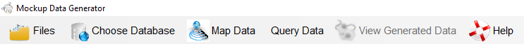
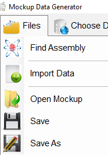
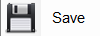
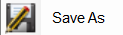
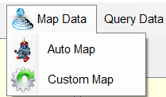
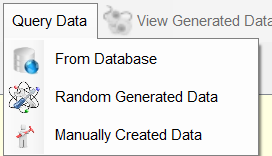
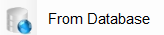

Mockup Data Generator
Main Menu:


Brings up an Open file dialog where assembly files can be loaded for review.
Brings up an Open file dialog where imported data files can be loaded
Brings up an Open file dialog where mock up projects can be loaded.

Saves a Mock up project.

Saves an existing project with a new name.

Displays a drop down of mapping modes:
Brings up the Mapping dialog with mapped columns and class fields, properties or
methods.
Brings up the Mapping dialog with columns and class fields, properties or
methods, but no pre-mapping.

Displays a drop down of querying sources:

Brings up the Thyme tool for SQL generating and data generation.